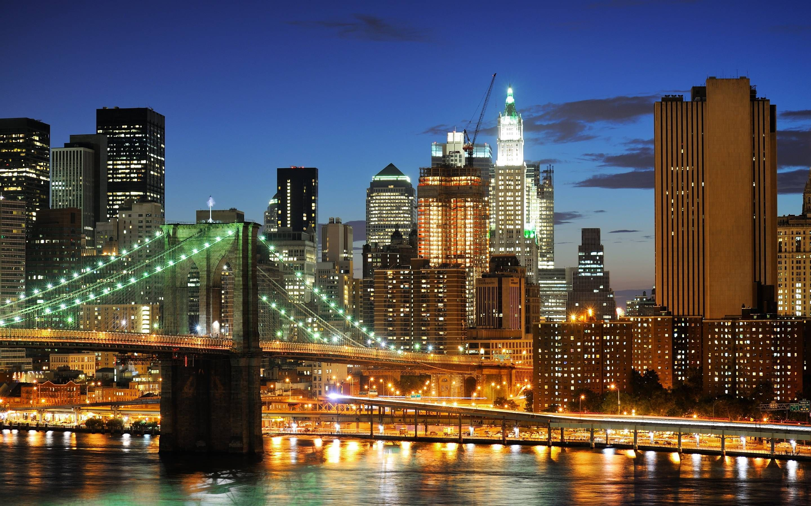

Experience the romance of the City of Lights. Stroll along the Seine, visit the iconic Eiffel Tower, and indulge in exquisite French cuisine at charming bistros.
Paris is the capital of the country of France. It has long been one of western Europe's major centers of culture and business.
Some of the world's greatest artists, writers, scholars, fashion designers, and chefs have lived in Paris.
Paris is monumental, in terms of its size of course, but also its rich architectural heritage! One of the symbols of the capital, its most famous monument is of course the Eiffel Tower.
This unique “Iron Lady” offers visitors unrivalled views. Not far away is the equally emblematic Arc de Triomphe.
Since the 17th century, Paris has been one of the world's major centers of finance, diplomacy, commerce, culture, fashion, and gastronomy.
Because of its leading role in the arts and sciences and its early adaptation of extensive street lighting,
it became known as the City of Light in the 19th century.
Tokyo
Discover the vibrant culture and technology of Japan. From the bustling streets of Shibuya to the serene gardens of the Imperial Palace, Tokyo offers a unique blend of tradition and modernity.
It is the country's largest city and is located in east-central Honshu at the head of Tokyo Bay.
The site has been inhabited since ancient times. The small fishing village of Edo existed there for centuries before it became the capital of the Tokugawa shogunate in 1603,
at the start of the Edo (Tokugawa) period. Tokyo is Japan's major cultural center.
Displays depicting the art and history of Japan and Asia are featured at the Tokyo National Museum in Ueno Park.
Ueno Park is also the site of a science museum, a zoological garden, and two major art museums.
New York

Visit the city that never sleeps. Experience the energy of Times Square, take a walk in Central Park, and enjoy world-class entertainment on Broadway.
Most travelers recommend visiting the area after dark to see the marquee displays. Many add checking out Times Square before or after a Broadway show is the perfect time to fit it into your schedule. However, if you're not a fan of crowds, reviewers suggest you avoid this area altogether.
Times Square's biggest tourist draw is the annual New Year's Eve ball drop.
Revelers crowd the area to see New York's famous Waterford crystal ball descend 77 feet from a pole on the One Times Square building.
If you're feeling brave, take a trip to New York and Times Square at this time of year and watch the ball drop for free!
Just plan on coming in the early morning and staying all day,
and note that the area is super crowded, even by New York standards.
About Us
We are passionate about helping you find the perfect travel experience.
We're driven by an insatiable curiosity about the world and its countless wonders.
Our team of travel enthusiasts, writers, and photographers is passionate about exploring new destinations, immersing ourselves in different cultures, and sharing our experiences with fellow travelers.
We believe that travel has the power to transform us, to broaden our perspectives, and to connect us with people and places from around the world. That's why we're dedicated to providing you with the most accurate, up-to-date,
and inspiring travel information, whether you're planning a quick weekend getaway or a once-in-a-lifetime journey to a far-flung corner of the globe. From the world's most famous landmarks to off-the-beaten-path gems, we'll take you on a journey of discovery and exploration,
highlighting the best places to visit, the most delicious foods to try, and the most unforgettable experiences to be had. So why wait?
Join us on this journey of discovery, and let's explore the world together – one destination at a time!
Contact Us
Have questions? Reach out to us!
We would love to hear from you! Whether you have inquiries about our travel packages, need assistance with your bookings, or simply want to share your travel experiences, our team is here to help. Please feel free to contact us through any of the following methods:
If you prefer to speak with someone directly, give us a call at (123) 456-7890. Our customer service representatives are available from 9 AM to 5 PM, Monday through Friday.
Follow Us on Social Media
Stay connected and follow us on our social media platforms for the latest updates, travel tips, and special promotions: